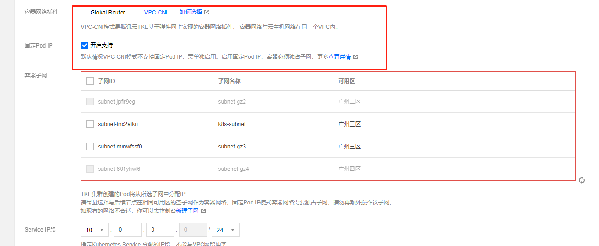
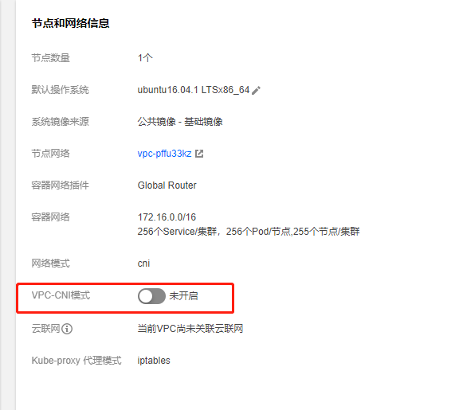
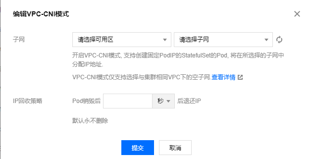
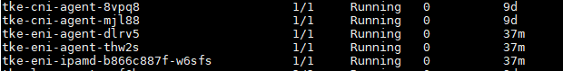
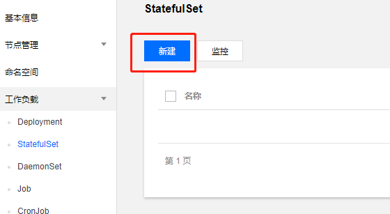
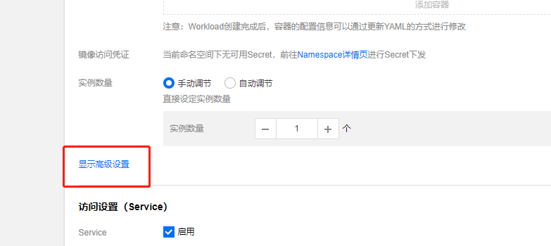
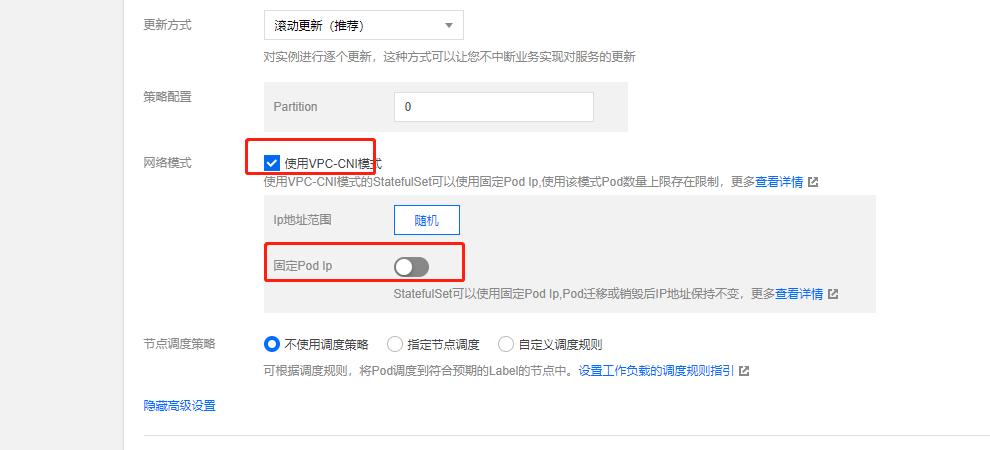

本章介绍了如何在TKE上使用vpc-cni的网络模式。
vpc-cni网络模式介绍
一般我们选择vpc-cni的网络模式分为2中情况，一种是创建集群的时候就选择vpc-cni模式，还有一种就是创建时候选择的GlobalRouter模式，后面才开启的vpc-cni模式，无论哪种情况开启，启用vpc-cni模式都需要满足如下要求
- 仅支持 k8s 1.10、1.12、1.14和1.16集群。
- 集群需要开启 cni 支持。
- 当前 VPC-CNI 模式仅支持单一子网，因此该模式下的 Pod 不可跨可用区调度。
- 当前 VPC-CNI 模式的子网不能与其他云上资源共用（如云服务器、负载均衡等）。
- 和子网处于相同可用区的节点才支持创建 VPC-CNI 模式的 Pod，请提前规划 VPC-CNI 模式子网。
- 您需要指定单节点下 VPC-CNI 模式的 Pod 数量上限，创建后不可修改。建议集群中节点配置相同。
创建集群时候选择vpc-cni模式

创建集群的时候选择，vpc-cni模式，建议开启固定ip的功能，如果某些业务需要设置ip为固定的，这样可以通过固定ip设置，固定ip的模式默认只在vpc-cni网络模式下的StatefulSet类型工作负载才会生效。
集群网络模式设置成vpc-cni后，集群会开启tke-eni的服务，来操作弹性网卡来pod进行ip分配，ip的从容器网络中获取

同时每一个节点会添加一个弹性网卡eth1，对应的pod ip通过新增的eth1分配副ip得到，创建的时候选择vpc-cni模式，所有的pod服务ip都是在容器的子网中，Pod 和 Node 的控制面和数据面完全在同一网络层面。
后续开启vpc-cni模式
开启的方式如下，必须要提前规划好一个子网，子网要求满足上面的要求，选择好你配置子网就可以开启了


同样的开启vcp-cni的网络模式后，集群会开启tke-eni的服务，来操作弹性网卡来pod进行ip分配，并且会为每一个节点分配一个弹性网卡，采用vpc-cni的pod服务ip都是在容器的子网中获取，Pod 和 Node 的控制面和数据面完全在同一网络层面。

后续开启的vpc-cni模式只能适用于StatefulSet类型的工作负载，其他的工作类型暂不支持从vpc-cni的容器子网中分配ip网络，其他的工作负载类型还是走GlobalRouter模式，pod ip的分配还是从之前的网络中获取，设置StatefulSet的网络模式为vpc-cni如下



如果你需要开启固定ip，则开启固定ip的选择。

欢迎访问 Vashon 的博客，博客和文章在完善中，请大家耐心等待。 若有问题或者有好的建议欢迎留言，笔者看到之后会及时回复。

...
...